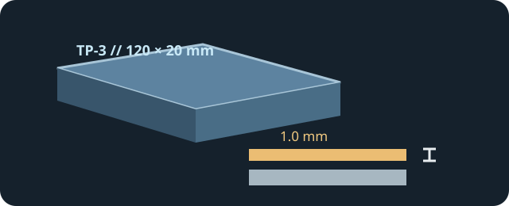

[ INDIVIDUAL COMPONENT // COOLING ]
ARCTIC TP-3 120 × 20 × 1.0 mm
Soft silicone-and-filler thermal pad, part ACTPD00052A; ARCTIC publishes insulating electrical properties but deliberately does not state a W/(m·K) value.

IDENTIFICATION: The dimensions and 1.0 mm thickness identify this pad variant only. Match the exact gap and compression requirement of the host rather than selecting by a conductivity headline.
Manufacturer specifications
| Catalog subcategory | Thermal Accessories |
|---|---|
| Exact model / code | ARCTIC TP-3, 120 × 20 × 1.0 mm; ACTPD00052A |
| Material | Silicone with a special filler, as described by ARCTIC. |
| Dimensions / thickness | 120 × 20 mm sheet; 1.0 mm nominal thickness. |
| Thermal conductivity | Not published by ARCTIC. The manufacturer explicitly declines to specify conductivity values. |
| Electrical properties | Dielectric strength 7.6 kV/mm; volume resistivity 2.69 × 10¹² Ω·cm, in ARCTIC's TP-3 technical sheet. |
| Other verified properties | Very soft pad; thermal resistance method uses a 1 mm sample compressed to 0.8 mm, per ARCTIC's product information. |
Application & compatibility cautions
- Install only at locations specified by the host and only where the original gap calls for a 1 mm pad. Do not stack pads or infer thickness from appearance.
- Check whether the contact design requires compression and remove protective liners as directed; misplaced or overly thick pads can prevent adjacent chips from contacting their cooler.
- Electrical insulation is not a compatibility guarantee. Avoid connectors, moving parts, and unapproved modifications; preserve original pad layout on GPUs and boards.
Manufacturer sources
- ARCTIC — TP-3 120 × 20 × 1.0 mm product pageExact product code, construction description, and ARCTIC's conductivity-measurement policy.
- ARCTIC — TP-3 technical data sheet (English)Manufacturer electrical and mechanical specifications.
This static catalog entry is an identification aid, not a compatibility guarantee; host-specific pad thickness and contact pressure take precedence.